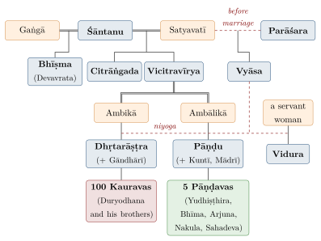
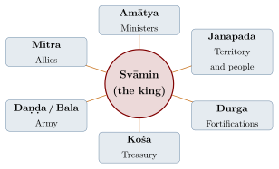

Chapter 4: The Mahābhārata: An Overview¶
dharme cārthe ca kāme ca mokṣe ca bharatarṣabha /
yad ihāsti tad anyatra yan nehāsti na tat kva cit //
“On dharma, wealth, pleasure and liberation, bull of the Bharatas: what is here is found elsewhere; what is not here is found nowhere.”
— Mahābhārata 1.56.33
In its vulgate form the Mahābhārata claims some 100,000 ślokas; the Poona Critical Edition, which removes the passages not supported by the whole manuscript tradition, still contains some 75,000 verses in 1,995 chapters (Section 1.4) (Brockington 1998; Hiltebeitel 2001). Around the story of a catastrophic war within a royal family it gathers cosmology, theology, philosophy, law, genealogy, geography, statecraft, military lore, love stories and extended reflection on dharma, karma and liberation.
The verse quoted above states the ambition of such a work: on the four aims of life, “what is here is found elsewhere; what is not here is found nowhere” (1.56.33). For the tradition the claim means that the epic is at once itihāsa, Dharmaśāstra, Arthaśāstra, Nītiśāstra and Mokṣaśāstra; for the historian it describes a text that drew into itself much of the learning of the centuries in which it took shape.
4.1 Vyāsa¶
4.1.1 The Identity of Vyāsa¶
The Mahābhārata is attributed to the sage Vyāsa — more fully, Kṛṣṇa Dvaipāyana Vyāsa (“the dark one, born on an island, the arranger”). His name is derived from vi + as, “to throw apart, divide, arrange.” Tradition credits him with dividing the one Veda into four, composing the Mahābhārata and compiling the eighteen Mahāpurāṇas, and teaching the epic to his five principal disciples; later tradition also identified him with Bādarāyaṇa, the author of the Brahmasūtra, the foundational text of Vedānta.
Vyāsa as a Recurring Figure
The Viṣṇu Purāṇa (3.3) teaches that in every Dvāpara Yuga a sage arises who arranges the Veda, and lists twenty-eight such Vyāsas; Kṛṣṇa Dvaipāyana is the twenty-eighth. For the tradition, Vyāsa is therefore not only a person but a recurring function: the teacher who makes Vedic knowledge accessible in each age. Within the epic he is also a character — the grandfather of the warring cousins — who appears at critical moments. Modern scholars treat “Vyāsa” as a name under which a large body of anonymous composition was gathered.
4.1.2 The Composition: The Gaṇeśa Story¶
The best-known story about the writing of the Mahābhārata tells how Vyāsa, wishing to dictate the epic, was advised by Brahmā to engage Gaṇeśa as scribe. Gaṇeśa agreed on condition that Vyāsa never pause; Vyāsa stipulated in turn that Gaṇeśa must not write anything without understanding it, and from time to time composed knotty verses (kūṭaślokas) to slow him down. The episode is found in some manuscripts of the Ādiparvan and in the vulgate, but it is absent from most of the manuscript tradition, and V. S. Sukthankar excluded it from the Critical Edition as a late interpolation (Sukthankar et al. 1933–1966). It nevertheless reflects a real feature of the epic’s history: the Mahābhārata is, in Hiltebeitel’s phrase, a text conscious of its own writing, and some scholars argue that it was composed in writing from the start (Hiltebeitel 2001).
4.2 The Epic’s Scale¶
The epic calls itself the “collection of a hundred thousand” (śatasāhasrī saṃhitā); it is divided into eighteen major books (parvans), with the Harivaṃśa as a supplement, and, in the traditional list, a hundred minor books (upaparvans). On the comparison with the Homeric poems, see Section 1.4.
Scholarly Note: The 100,000 count and the Critical Edition
The table of contents in the second chapter of the Ādiparvan (the Parvasaṅgraha) lists the books and minor books of the epic, and tradition gives the whole as 100,000 ślokas. The Critical Edition prepared at the Bhandarkar Oriental Research Institute, Pune (19 volumes, 1933–1966), reconstructs, on the basis of over a thousand manuscripts from all regions, the text from which the surviving versions descend; passages found only in some manuscripts are printed in the apparatus and appendices (Sukthankar et al. 1933–1966). Both texts are cited in scholarship: the critical text for historical study, the vulgate (usually with Nīlakaṇṭha’s commentary) for the received tradition.
4.3 The Evolution: From Jaya to Bharata to Mahābhārata¶
The Mahābhārata itself gives several hints about its own growth, which have often been read as a three-stage history:
-
Jaya (“Victory”): The epic calls itself jayo nāmetihāso ’yam, “this history called Victory” (1.56.19), and the name has been taken as that of an original core. The popular claim that the Jaya had 8,800 verses derives from a verse of the vulgate that speaks of 8,800 riddling verses (kūṭaślokas) known only to Vyāsa, Śuka and perhaps Sañjaya; it says nothing about an earlier version of the text.
-
Bhārata: The Ādiparvan states that Vyāsa made a Bhārata of 24,000 verses “without the sub-stories” (upākhyānas; 1.1.61).
-
Mahābhārata: The full work of 100,000 verses as narrated by Sauti at Naimiṣa.
The epic also says that some brahmins begin the Bhārata with Manu, others with Āstīka and others with Uparicara (1.1.50 in the Critical Edition), which points to alternative openings in circulation. Modern scholars disagree about how to interpret these clues. The older view, represented by Winternitz and developed by Brockington, sees a gradual expansion of a bardic war narrative over some eight centuries (c. 400 BCE–400 CE), with didactic and devotional material added in the later stages. Others, notably Alf Hiltebeitel and James Fitzgerald, have argued that the Mahābhārata was composed as a written work by brahmin authors over a much shorter period (perhaps between the mid-second century BCE and the turn of the era), drawing on earlier oral traditions; on this view the didactic books are integral rather than accretions (Winternitz 1927; Brockington 1998; Hiltebeitel 2001; Fitzgerald 2004). All agree that the text continued to change in transmission for many centuries after its main composition, as the regional versions show.
4.4 The Indo-European Comparative Reading¶
A different question was put to the epic in the twentieth century by comparative mythology. Sanskrit belongs to the Indo-European family of languages, and scholars since the nineteenth century had compared the gods of the Ṛgveda with those of Iran, Greece, Rome and Scandinavia. In 1947 the Swedish scholar Stig Wikander argued that the Pāṇḍavas reproduce, in human form, a structured group of Vedic gods (Wikander 1947). Each brother is the son of a god, and the fathers form a pattern. Yudhiṣṭhira is the son of Dharma, a figure Wikander linked to the sovereign god Mitra. Bhīma and Arjuna are the sons of Vāyu and Indra, two kinds of warrior god: the brutal fighter who acts alone and the chivalrous champion. The twins Nakula and Sahadeva are the sons of the Aśvins, gods of health, prosperity and service. Their common wife Draupadī, on this reading, unites the three functions, as goddesses do in other Indo-European mythologies.
Georges Dumézil made Wikander’s discovery the centrepiece of the first volume of Mythe et épopée (1968) (Dumézil 1968). For Dumézil the Indo-European peoples shared an “ideology of three functions” — sovereignty, religious and juridical; physical force; and fertility and abundance — which shaped their pantheons and their social theory, the Indian varṇas being one expression of it. The Mahābhārata, he argued, “transposed” an inherited myth into epic. Its heroes are gods acting as men and their enemies are demons, and the great battle, with its near-total destruction followed by a renewed world under Parīkṣit, echoes the eschatological battle of other Indo-European traditions, most clearly the Norse Ragnarök. He extended the analysis to the older generation, reading the blind Dhṛtarāṣṭra and the wise Vidura, for example, as transpositions of Bhaga and Aryaman, the Vedic companions of Mitra.
Alf Hiltebeitel’s The Ritual of Battle (1976) built on this work, reading Kṛṣṇa’s role and the war through the comparative model and through the Vedic and Purāṇic myths of cosmic dissolution; his later work on the epic grew out of it (Hiltebeitel 1976). The approach has also met sharp criticism. John Brough showed in 1959 that a determined reader could find a “tripartite ideology” in the Hebrew Bible as easily as in Indo-European texts, and argued that the scheme was too elastic to be tested (Brough 1959). Others have objected that it fixes on a single structural level of a text that grew over centuries and says little about why the inherited pattern was retold in this particular form. Textual scholars who accept some of Dumézil’s parallels treat the “transposition” as a hypothesis about the prehistory of the story rather than a reading of the epic as it stands (Brockington 1998).
Two points help to place the debate. First, the comparison rests on the kinship of languages and of inherited poetic and mythic forms; it requires no particular theory about where the speakers of early Indo-European lived, and it says nothing about the historicity of the war. Second, it does not compete with the textual history described above. A trifunctional pattern could survive into a poem composed in writing by brahmin authors as readily as into a bardic epic, and the comparative reading is best taken as one of the several levels of meaning that the Mahābhārata carries at once (Section 1.7).
4.5 The 18 Parvas and the Harivaṃśa¶
The Mahābhārata is divided into 18 parvans (“books”) — a number that recurs through the epic: the war lasts eighteen days, eighteen armies (akṣauhiṇīs) take part, and the Bhagavad Gītā has eighteen chapters. Appended to the eighteen books is the Harivaṃśa, a supplement (khila) on the lineage and life of Kṛṣṇa (Table 4.1).
| No. | Parva | Meaning | Chapters (CE) |
|---|---|---|---|
| 1 | Ādi Parva | Book of the Beginning | 225 |
| 2 | Sabhā Parva | Book of the Assembly Hall | 72 |
| 3 | Āraṇyaka (Vana) Parva | Book of the Forest | 299 |
| 4 | Virāṭa Parva | Book of Virāṭa | 67 |
| 5 | Udyoga Parva | Book of the Effort | 197 |
| 6 | Bhīṣma Parva | Book of Bhīṣma | 117 |
| 7 | Droṇa Parva | Book of Droṇa | 173 |
| 8 | Karṇa Parva | Book of Karṇa | 69 |
| 9 | Śalya Parva | Book of Śalya | 64 |
| 10 | Sauptika Parva | Book of the Sleeping Warriors | 18 |
| 11 | Strī Parva | Book of the Women | 27 |
| 12 | Śānti Parva | Book of Peace | 353 |
| 13 | Anuśāsana Parva | Book of Instruction | 154 |
| 14 | Āśvamedhika Parva | Book of the Horse Sacrifice | 96 |
| 15 | Āśramavāsika Parva | Book of the Hermitage | 47 |
| 16 | Mausala Parva | Book of the Clubs | 9 |
| 17 | Mahāprasthānika Parva | Book of the Great Journey | 3 |
| 18 | Svargārohaṇa Parva | Book of the Ascent to Heaven | 5 |
| Total | 1,995 | ||
| Harivaṃśa (supplement) | Lineage of Hari (Kṛṣṇa) | 118 |
4.6 The Central Narrative: The Pāṇḍava-Kaurava Conflict¶
4.6.1 The Royal Lineage¶
The Mahābhārata’s central narrative concerns a dynastic dispute within the Kuru royal family of Hastināpura (on the upper Gaṅgā, in present-day Meerut district, Uttar Pradesh). The key genealogical relationships are (Figure 4.1):

4.6.2 The Core Conflict¶
The central dispute is between the Pāṇḍavas (five sons of King Pāṇḍu) and the Kauravas (one hundred sons of King Dhṛtarāṣṭra) over the Kuru kingdom. The Pāṇḍavas, led by Yudhiṣṭhira, are repeatedly cheated of their share: first by Duryodhana’s attempt to burn them alive in the house of lac, then by the dice game in which Yudhiṣṭhira loses his kingdom, his brothers, himself and their common wife Draupadī, then by thirteen years of exile. When they return and claim their kingdom, Duryodhana refuses to grant even five villages to the five brothers.
4.7 Kṛṣṇa in the Mahābhārata¶
Kṛṣṇa moves through the narrative in a double character: a Yādava prince and kinsman of the Pāṇḍavas, fully human in his social relationships and political manoeuvres, who reveals a divine nature at critical moments — above all in the Bhagavad Gītā, where he declares that he comes into being “in age after age” to protect the good, destroy the wicked and re-establish dharma (4.7–8; Chapter 6). He is the envoy who tries for peace in the Udyoga Parva, Arjuna’s charioteer, friend and teacher, the strategist behind most of the Pāṇḍavas’ decisions in the war, and the god who shows Arjuna his cosmic form (viśvarūpa). How these roles fit together, and how far the divine Kṛṣṇa belongs to the epic’s earliest layers, are among the central questions of Mahābhārata scholarship (Hiltebeitel 1976; Matchett 2001).
4.8 The Poona Critical Edition¶
The most important modern event in the history of the Mahābhārata text is the Critical Edition prepared at the Bhandarkar Oriental Research Institute (BORI), Pune. Begun in 1919 and completed in 1966, it was one of the major philological projects of the twentieth century. (Claims sometimes made in popular literature that the Critical Edition has been inscribed on UNESCO’s Memory of the World Register are mistaken; the BORI collection inscribed in 2007 is a set of Ṛgveda manuscripts.) See Table 4.2.
| Feature | Details |
|---|---|
| Institution | Bhandarkar Oriental Research Institute, Pune |
| Project period | 1919–1966; text published in 19 volumes, 1933–1966 |
| General editors | V. S. Sukthankar (to 1943), S. K. Belvalkar, P. L. Vaidya |
| Manuscripts | Over a thousand, in all the major scripts of India and Nepal |
| Text | c. 75,000 verses in 1,995 chapters |
| Method | Stemmatic comparison of the northern and southern recensions; passages not supported by the whole tradition relegated to apparatus and appendices |
| Supplement | Critical edition of the Harivaṃśa by P. L. Vaidya (1969–1971) |
Sukthankar’s Prolegomena to the Ādiparvan (1933) set out the principles of the edition. Its method, its omissions and its critics are described below; whatever its limits, the edition made historical study of the epic possible and underlies the major modern translations (Sukthankar et al. 1933–1966; van Buitenen 1973–1978).
4.8.1 How the Edition Was Made¶
The project grew out of a problem that Indian and European scholars had recognised since the late nineteenth century: every printed Mahābhārata rested on a handful of late manuscripts, and none could tell a reader which passages the whole tradition shared and which belonged to one region or one family of copies. After N. B. Utgikar’s tentative edition of the Virāṭaparvan (1923) had tried out the method, V. S. Sukthankar became general editor in 1925 and edited the Ādiparvan himself; it appeared in fascicles between 1927 and 1933 with his long Prolegomena. The other books were entrusted to individual editors, among them Raghu Vira (Virāṭa), Franklin Edgerton (Sabhā), S. K. De (Udyoga and Droṇa), S. K. Belvalkar (Bhīṣma and Śānti) and P. L. Vaidya (Karṇa). After Sukthankar’s death in 1943 Belvalkar, and later Vaidya, saw the edition through to its completion (Sukthankar et al. 1933–1966).
Sukthankar sorted the manuscripts by script and region into versions, and the versions into two recensions, northern and southern (Table 4.3). Two observations shaped the whole edition. First, the Śāradā manuscripts of Kashmir in the far north and the Malayalam manuscripts of Kerala in the far south, the most isolated of the versions and comparatively short, often agree against all the rest. Since copyists at opposite ends of the subcontinent could not have consulted one another, such agreement had to go back to a common source. Second, the remaining versions, and above all the Devanāgarī manuscripts, had been contaminated: their scribes had compared copies and combined readings from several lines of descent, so that no simple family tree of manuscripts could be drawn.
| Recension | Siglum | Version | Remarks |
|---|---|---|---|
| Northern | Ś | Śāradā (Kashmir) | Few and incomplete manuscripts, but judged the least contaminated northern version |
| K | Devanāgarī allied to Śāradā | Northwestern; close to Ś | |
| Ñ, V, B | Nepali, Maithili, Bengali | Eastern scripts; shared expansions | |
| D | Devanāgarī | Numerous and heavily contaminated; includes the vulgate of Nīlakaṇṭha | |
| Southern | T, G | Telugu, Grantha | Fuller texts with many southern additions |
| M | Malayalam | The shortest southern version; often agrees with Ś |
From these observations followed the working rule. A passage or reading attested in both recensions, and especially in the independent versions, was accepted into the constituted text. A passage found only in one recension, or in only some versions, was relegated to the foot of the page, where shorter insertions are printed as numbered “starred passages”, or, if long, to the appendices at the end of each book. Where the evidence was evenly divided and the editor’s choice uncertain, the reading is marked with a wavy line beneath it. Because the editors could choose only among readings that had actually been transmitted, Sukthankar was careful to say that the result was not Vyāsa’s poem but the oldest form of the text that the surviving manuscripts allowed him to reach; he did not claim that it had ever circulated as a manuscript in its own right.
4.8.2 What the Critical Text Leaves Out¶
The reader who comes to the critical text from the popular epic will miss several familiar scenes. Gaṇeśa’s role as scribe (Section 4.1) is printed as the first appendix to the Ādiparvan. The verse on Vyāsa’s 8,800 riddling stanzas (Section 4.3) is absent. In the dicing hall, Edgerton’s text of the Sabhāparvan keeps the miracle by which Draupadī’s garment is renewed each time Duḥśāsana pulls it away, but not her prayer to Kṛṣṇa, which the manuscripts add in different forms and places; in the critical text the miracle is left unexplained. Several famous didactic verses, among them some of the Yakṣa’s riddles quoted in this volume, are found only in the vulgate, and are labelled as such wherever they are cited (Section 4.14).
Exclusion from the constituted text is a historical judgement, not a verdict on value. The starred passages and appendices record how the epic was actually read, recited and painted in particular regions and periods, and many of them are older than the oldest surviving manuscripts. Hiltebeitel and others have stressed that the apparatus is therefore itself a source for the history of the epic’s reception, and that the critical text and the received text answer different questions.
4.8.3 The Vulgate and Other Printed Texts¶
Before the Critical Edition, the Mahābhārata was read in print almost entirely in the text established in the later seventeenth century by Nīlakaṇṭha Caturdhara (Section 1.7), a northern text that he had collated from manuscripts available to him in Banaras. This “vulgate” underlies the Calcutta edition of the 1830s, the Bombay editions printed with his commentary, K. M. Ganguli’s English translation (Ganguli 1883–1896) and the Gita Press edition with Hindi translation, through which most Indian readers still meet the full epic. Southern readers had the Kumbakonam edition (1906–1910), based on southern manuscripts, which includes many passages unknown in the north. The Critical Edition is the basis of J. A. B. van Buitenen’s unfinished Chicago translation, continued by James Fitzgerald and others, and of Bibek Debroy’s complete English translation in ten volumes (van Buitenen 1973–1978; Fitzgerald 2004; Debroy 2010–2014). Verse numbers differ between the two texts, sometimes by whole chapters, which is why this volume gives Critical Edition references where they exist and labels vulgate references explicitly.
4.8.4 The Debate over the Critical Edition¶
Sukthankar himself acknowledged that the classical method of textual criticism, which reconstructs an archetype from a family tree of manuscripts, could not be applied mechanically to a text so widely recited and so freely contaminated. His procedure was eclectic, guided by the agreement of the independent versions rather than by a strict stemma, and the editors of later books applied it with differing degrees of rigour. Three broad positions have emerged in the debate since.
The first rejects the goal of an archetype altogether. Madeleine Biardeau argued in the late 1960s that the epic and the Purāṇas belonged to a living tradition in which every regional version was legitimate on its own terms, and that a reconstructed archetype was a construct of European philology which no Indian audience had ever heard (Biardeau 1968). On this view the critical text obscures what matters most, the work of the tradition itself, and the regional versions should be studied as wholes rather than as witnesses to a lost original.
The second accepts the archetype and draws historical conclusions from it. Hiltebeitel and Fitzgerald have argued that the broad agreement of the northern and southern recensions over most of the text can only be explained by descent from a single written archetype, and that the critical text gives a fair approximation of it; for Hiltebeitel this supports the view that the epic was composed in writing, as a unified work, rather than accreted over centuries (Section 4.3) (Hiltebeitel 2001). T. P. Mahadevan offered a historical explanation for Sukthankar’s puzzling agreement between Kashmir and Kerala: in his account the archetype, or a text very close to it, was carried to the far south by migrating brahmin communities around the turn of the era, and later northern influence explains the fuller Telugu and Grantha versions (Mahadevan 2008).
The third position defends the edition chiefly against the older tradition of “higher criticism”, which sought to peel away layers of the text in search of an original heroic epic. Vishwa Adluri and Joydeep Bagchee have surveyed the manuscript stemmata on which the edition’s decisions rest and argued that its evidence does not support the theory of an earlier oral epic overlaid by brahmin didactic material (Adluri and Bagchee 2018). Scholars who still write of a gradual growth, such as Brockington, use the critical text as their starting point but argue from style, metre and content rather than from manuscripts (Brockington 1998).
For the general reader, the practical conclusion is simple. The critical text is the best available evidence for the shape of the Mahābhārata at the earliest stage the manuscripts can reach; the vulgate and the regional versions are the Mahābhārata that commentators expounded, reciters performed and audiences knew. Both are the epic, seen at different moments of its history.
4.9 The Harivaṃśa: The Supplement¶
The Harivaṃśa (“Lineage of Hari”) is the supplement (khila) to the Mahābhārata. Its critical text (118 chapters, a little over 6,000 verses) is much shorter than the vulgate, which divides the work into three parts:
-
Harivaṃśa Parva: Genealogies from creation to the Yādavas
-
Viṣṇu Parva: The life of Kṛṣṇa in Vraja and Mathurā — the earliest detailed account of his childhood among the cowherds
-
Bhaviṣya Parva: Prophecies of the Kali age and other narratives
Usually dated c. 1st–3rd century CE, the Harivaṃśa is the earliest extensive source for the life of Kṛṣṇa among the cowherds, material later elaborated in the Viṣṇu Purāṇa and the tenth book of the Bhāgavata Purāṇa (Matchett 2001).
4.9.1 Before the Harivaṃśa: Vāsudeva-Kṛṣṇa in Grammar and Inscription¶
The Harivaṃśa did not invent Kṛṣṇa’s cult; it gathered and gave narrative form to traditions that are attested independently several centuries before it. Pāṇini’s grammar (c. 4th century BCE) provides a rule (4.3.98) for forming the names of the devotees of Vāsudeva and of Arjuna, which shows that both were already objects of personal allegiance. Patañjali’s Mahābhāṣya (2nd century BCE) refers to performers who enact the killing of Kaṃsa, evidently a familiar story. Inscriptions and coins carry the evidence further. Silver coins of the Indo-Greek king Agathocles (early 2nd century BCE), found at Ai Khanoum in northern Afghanistan, show a figure with a plough, identified as Saṃkarṣaṇa-Balarāma, and another with a wheel and conch, identified as Vāsudeva. At Besnagar near Vidiśā, Heliodorus, an envoy of the Indo-Greek king Antialcidas, set up a Garuḍa column to “Vāsudeva, god of gods” in the later 2nd century BCE and called himself a bhāgavata, a devotee of the Lord. The Ghosuṇḍī inscription from near Chittorgarh (1st century BCE) records a stone enclosure for the worship of Saṃkarṣaṇa and Vāsudeva, and a well inscription from Mora near Mathurā (around the turn of the era) mentions images of the five Vṛṣṇi heroes, the deified clan to which Vāsudeva and Saṃkarṣaṇa belonged (Bryant 2007).
These sources know Vāsudeva the Vṛṣṇi prince and god; none of them mentions the cowherd child of Vraja. R. G. Bhandarkar proposed in 1913 that two figures had merged: the Vṛṣṇi hero Vāsudeva of the Mahābhārata, and a pastoral boy-god, Gopāla, whom he associated with the Ābhīra herders (Bhandarkar 1913). The Ābhīra link is now doubted, but the observation on which the theory rests is sound: the pastoral Kṛṣṇa enters Sanskrit literature, as far as the surviving texts show, with the Harivaṃśa. Hardy has argued that Tamil poetry of the early centuries CE knew its own cowherd god, Māyōṉ, and that southern pastoral traditions contributed to the later development (Hardy 1983).
4.9.2 The Shape of the Text¶
The Mahābhārata’s own table of contents, the Parvasaṅgraha of the Ādiparvan, already counts the Harivaṃśa and the Bhaviṣya among the epic’s minor books, and calls them khila, “supplement” (1.2.69, 1.2.233). The Harivaṃśa continues the epic’s outer frame: Vaiśaṃpāyana, having finished the war story for King Janamejaya, is asked by him to tell the history of the Vṛṣṇis and Andhakas, of whom the epic had said little. The critical text, edited by P. L. Vaidya on the same principles as the Mahābhārata, has 118 chapters; the vulgate is more than twice as long, its third part in particular having attracted many additions (Vaidya 1969–1971; Brodbeck 2019).
The first part, the genealogical Harivaṃśaparvan, opens with creation and the first king Pṛthu, who levels the earth and “milks” it to bring forth crops and herds; it then traces the solar and lunar lineages down to the Yādava line of Yadu, including the story of the Syamantaka jewel that brings Kṛṣṇa under suspicion of theft. This material overlaps closely with the genealogical chapters of the older Purāṇas, and the Harivaṃśa is a principal witness to the Purāṇic vaṃśa tradition (Section 7.2). The second part, the Viṣṇuparvan, is the life of Kṛṣṇa. The short third part, the Bhaviṣyaparvan, returns to Janamejaya and the future, with prophecies of the Kali age.
4.9.3 The Life of Kṛṣṇa in the Viṣṇuparvan¶
The Viṣṇuparvan opens in heaven. The Earth, oppressed by demons reborn as kings, appeals to the gods; Viṣṇu agrees to descend, and he enlists the goddess Nidrā (“Sleep”) to be born to Yaśodā at the moment he is born to Devakī, so that the two infants can be exchanged. When Kaṃsa dashes the girl against a rock, she rises into the sky as a goddess, foretells his death and goes to dwell in the Vindhya mountains. A hymn to her transmitted in the Harivaṃśa tradition, the Āryāstava (printed by the Critical Edition in its first appendix), is among the earliest Sanskrit hymns to a great goddess, and the episode is an important source for the early history of the goddess of the Vindhyas, Vindhyavāsinī.
The childhood in Vraja then unfolds in the episodes that every later telling repeats: the demoness Pūtanā, killed as she suckles the infant; the overturned cart; the two trees uprooted by the child tied to a mortar, which gives him the name Dāmodara; the move of the herders’ camp to Vṛndāvana; the subduing of the serpent Kāliya in the Yamunā; the slaying of the ass-demon Dhenuka and of Pralamba by Balarāma. The central episode is Govardhana. Kṛṣṇa persuades the herders to abandon their festival for Indra and to honour instead the mountain and the cattle on which their life depends; when Indra sends a storm in anger, Kṛṣṇa lifts the mountain and holds it for seven nights as a shelter, and the humbled Indra consecrates him as lord of the cows. Read historically, the episode marks the displacement of the Vedic Indra by a pastoral god; read devotionally, it shows the god protecting those who take refuge in him.
The love of the cowherd women, so central to later Kṛṣṇa devotion, occupies a single short passage. On autumn nights the young Kṛṣṇa sports with the women of the camp, who sing of his deeds and imitate his movements, dancing in rows and in pairs; tradition calls this dance the hallīsaka, though the word does not occur in the critical text. There is no Rādhā, no single favoured woman, no disappearance and no theology of separation; these developments belong to the Viṣṇu Purāṇa and, above all, to the Bhāgavata (Section 7.10). The bull Ariṣṭa and the horse Keśin are killed, and Akrūra arrives to take the brothers to Mathurā. There Kṛṣṇa kills the elephant Kuvalayāpīḍa and the wrestler Cāṇūra, while Balarāma takes on Muṣṭika, and finally Kṛṣṇa kills Kaṃsa himself and restores Ugrasena to the throne.
The second half of the Viṣṇuparvan turns from the pastoral to the political. Kṛṣṇa and Balarāma study with the teacher Sāndīpani at Avantī and recover his drowned son from the realm of death as their fee. Jarāsandha of Magadha, Kaṃsa’s father-in-law, besieges Mathurā again and again, and the Yādavas, unable to withstand him and the foreign king Kālayavana, migrate to the western coast and build Dvārakā. There follow Kṛṣṇa’s marriage to Rukmiṇī, whom he carries off on the eve of her marriage to another suitor, against the will of her brother Rukmin; his victory over Naraka and the release of the women Naraka had held captive; the theft, for Satyabhāmā, of the pārijāta tree from Indra’s paradise; and the war with the demon Bāṇa, whose daughter Uṣā has fallen in love with Kṛṣṇa’s grandson Aniruddha. In the Bāṇa episode Kṛṣṇa fights Śiva himself, who protects Bāṇa, and the conflict ends in mutual recognition; the passage is an early literary expression of the reconciliation of Vaiṣṇava and Śaiva claims.
4.9.4 From the Harivaṃśa to the Bhāgavata¶
The Harivaṃśa is the first of three great Sanskrit lives of Kṛṣṇa, followed by the fifth book of the Viṣṇu Purāṇa and the tenth book of the Bhāgavata Purāṇa. The later texts keep the sequence of episodes but change its emphasis (Table 4.4). The Viṣṇu Purāṇa presents Kṛṣṇa as a partial descent of Viṣṇu, born from one of his hairs, and expands the dance with the cowherd women into a short rāsa episode in which Kṛṣṇa slips away with one favoured woman. The Bhāgavata turns the same scenes into the centre of a theology of love. Freda Matchett’s comparison of the three texts shows a steady movement from Kṛṣṇa as the agent of Viṣṇu, sent to relieve the Earth’s burden, to Kṛṣṇa as the Lord himself, of whom Viṣṇu’s other descents are portions (Matchett 2001).
| Harivaṃśa | Viṣṇu Purāṇa, Book 5 | Bhāgavata Purāṇa, Book 10 | |
|---|---|---|---|
| Usual dating | c. 1st–3rd c. CE | core mid-1st millennium CE (Hazra: c. 4th c.) | c. 9th–10th c. CE (most estimates) |
| Frame | Vaiśaṃpāyana to Janamejaya, as a supplement to the epic | Parāśara to Maitreya | Śuka to Parīkṣit in his last seven days |
| Kṛṣṇa’s status | Viṣṇu descended to relieve the Earth | A partial descent (aṃśa) of Viṣṇu | The Lord himself (1.3.28) |
| The cowherd women | A brief dance on autumn nights (the hallīsaka) | A rāsa episode; one favoured woman | Five chapters (10.29–33); separation and longing as the heart of devotion |
| Rādhā | Not named | Not named | Not named |
The Harivaṃśa’s influence reached well beyond Sanskrit. The Jain Harivaṃśa tradition discussed below retold the same story in its own terms; the Harivaṃśa supplied the plots of Sanskrit and regional plays and poems on Kṛṣṇa’s childhood and on Uṣā and Aniruddha, and an Old Javanese kakawin bears its name (Section 12.2.4). In India it was gradually overshadowed by the Bhāgavata, which absorbed and transformed its narrative.
4.10 Kṛṣṇa and the Pāṇḍavas in Jain and Buddhist Tradition¶
Like the Rāma story (Section 2.8), the story of Kṛṣṇa and the Pāṇḍavas was retold outside the brahmanical tradition, at length by the Jains and more briefly by Buddhists.
4.10.1 The Jain Harivaṃśa and Pāṇḍava Narratives¶
In Jain universal history Kṛṣṇa is the ninth and last Vāsudeva of the present cycle, his brother Balarāma the ninth Baladeva, and Jarāsandha the Prativāsudeva whom Kṛṣṇa kills. Kṛṣṇa is also the cousin of Ariṣṭanemi (Neminātha), the twenty-second Tīrthaṅkara, whose renunciation on the eve of his wedding to Rājīmatī, moved by pity for the animals penned for the wedding feast, is one of the best-loved Jain stories. The narrative is told at length in the Harivaṃśapurāṇa of the Digambara Jinasena (completed in 783 CE), in Svayambhū’s Apabhraṃśa Riṭṭhaṇemicariu (9th century), in the eighth book of Hemacandra’s Triṣaṣṭiśalākāpuruṣacarita (12th century), and in later Pāṇḍavacaritas and Pāṇḍavapurāṇas, among them Śubhacandra’s Sanskrit Pāṇḍavapurāṇa (1551).
As in the Jain Rāmāyaṇas, the cast of the epic is kept but its theology is changed. Kṛṣṇa is a great king, not a god; because of the violence of his career he is reborn in hell, though he is destined to become a Tīrthaṅkara in a future age. Dvārakā is destroyed by fire through the anger of the ascetic Dvaipāyana, whom drunken Yādava youths had insulted, and the Pāṇḍavas end their lives as Jain monks, attaining liberation, in Śvetāmbara tradition, on Mount Śatruñjaya. Padmanabh Jaini has described these works as a “counter-tradition” that accepted the epic world while rejecting the doctrine of divine descent (Jaini 1993).
4.10.2 The Buddhist Ghata Jātaka¶
The Pāli Ghata Jātaka (no. 454) tells of ten royal brothers, among them Vāsudeva Kaṇha and Baladeva, who conquer Dvāravatī. When Vāsudeva is inconsolable at the death of a son, his wise brother Ghata cures him by feigning madness and crying for the hare in the moon, and so teaches him that the dead cannot be recovered. The brothers later mock the ascetic Kaṇhadīpāyana, whose prophecy brings about their destruction in a drunken quarrel — an ending close to that of the Mausala Parva (Cowell 1895–1907). Together with the Dasaratha Jātaka (Section 2.8), the story shows that epic narratives were common property, which each tradition shaped to its own teaching.
4.11 The Mahābhārata as Encyclopaedia of Dharma¶
Beyond the central narrative, the epic contains:
-
Philosophical texts: Bhagavad Gītā, Śānti Parva, Anuśāsana Parva, Mokṣadharma, Nārāyaṇīya
-
Ethical narratives: Vidura’s counsel (Vidura Nīti), the Yakṣa’s questions to Yudhiṣṭhira
-
Upākhyānas (sub-stories): Nala and Damayantī, Sāvitrī and Satyavat, the Rāmopākhyāna, Śakuntalā, Yayāti and many others
-
Statecraft: Rājadharma sections of the Śānti Parva
-
Military science: Descriptions of military formations (vyūha), weapons, and strategy
-
Cosmology: Extended cosmological descriptions in the Bhīṣma and Śānti Parvas
-
Geography: Descriptions of Bhāratavarṣa and its sacred pilgrimage sites (Vana Parva)
-
Medical lore: Scattered references to disease, healing and the body
-
Devotional theology: The Nārāyaṇīya section of the Śānti Parva, an early Vaiṣṇava (Pāñcarātra) text
4.12 The Mahābhārata’s Vision of Tragic Complexity¶
What distinguishes the Mahābhārata from most other epic literature is its engagement with moral ambiguity. Compared with the Rāmāyaṇa, where the line between heroes and villains is relatively clear, the Mahābhārata inhabits a world in which:
-
Kṛṣṇa counsels stratagems that would be considered deceptive by conventional standards, and defends them
-
Bhīṣma, the most revered elder, fights on the Kaurava side out of loyalty to the throne
-
Karṇa, a man of great generosity and courage, is humiliated for his supposed low birth and destroyed by his loyalty
-
Droṇa teaches the Pāṇḍavas but fights against them, and is killed through a calculated lie about his son’s death
-
Yudhiṣṭhira gambles away his kingdom, his brothers and his wife
-
Draupadī is dragged into the assembly and humiliated while the elders remain silent, and asks a question — whether a man who has lost himself can still stake his wife — that no one answers
The epic thus presents dharma not as a simple rule-book but as a field of difficult discernment (dharmasūkṣmatā; Section 4.14). The epic’s own verdict on the war is bleak: the victors inherit a devastated world, and Yudhiṣṭhira’s grief leads him to wish to renounce the throne (Hiltebeitel 2001; Fitzgerald 2004).
4.13 Major Character Studies: The Pāṇḍavas¶
Each of the five Pāṇḍavas embodies a distinct combination of excellence and frailty. In the Mahāprasthānika Parva, as the brothers and Draupadī fall one by one on their last journey, Yudhiṣṭhira names the fault that brought each down (Table 4.5).
| Pāṇḍava | Divine Father | Primary Virtue | Fault (as named in Book 17) | Comment |
|---|---|---|---|---|
| Yudhiṣṭhira | Dharma | Truthfulness, self-restraint | (survives; earlier, a weakness for dice) | Even the most righteous are vulnerable |
| Bhīma | Vāyu (Wind) | Physical might | Gluttony and boasting of his strength | Strength must be tempered by restraint |
| Arjuna | Indra | Martial excellence | Pride in his prowess | Even the greatest warrior needs guidance |
| Nakula | Aśvins | Beauty, horsemanship | Pride in his beauty | |
| Sahadeva | Aśvins | Wisdom, knowledge | Pride in his wisdom |
4.13.1 Yudhiṣṭhira: The Dharmarāja¶
Yudhiṣṭhira is drawn with unusual complexity. He is called Dharmarāja, the King of Dharma, yet his life is a continuous struggle between ideals and practical reality. His gambling, his half-truth about Aśvatthāman that brings about Droṇa’s death, his grief after the war, and his brief vision of hell before heaven all show the epic’s understanding that even the most righteous must live with moral compromise. At the very end he refuses to enter heaven without the dog that has followed him — Dharma himself in disguise.
4.13.2 Karṇa: The Tragic Hero¶
Many readers find Karṇa the epic’s most tragic figure: generous and brave, he is destroyed by the circumstances of his birth and by his loyalty to Duryodhana. The eldest son of Kuntī by the Sun god, abandoned at birth and raised as a charioteer’s son, he is the case through which the epic explores the relation between birth, destiny and moral choice.
The Curses and Gifts of Karṇa
Karṇa’s tragedy is compounded by a series of curses and unfulfilled gifts:
-
Born with divine armour (Kavaca-Kuṇḍala) — which he voluntarily gives to Indra
-
Cursed by Paraśurāma — his weapons will fail at the critical moment
-
Cursed by a Brāhmaṇa — the earth will swallow his chariot wheel
-
His promise to Kuntī — he will not kill any Pāṇḍava except Arjuna
-
Rejected by society — despite being Kṣatriya by birth, treated as Sūta
-
Loyalty to Duryodhana — the one person who accepted him, binding him to Adharma
-
The final battle — cursed weapons, sinking chariot wheel, and Kṛṣṇa’s reminders of his own Adharmic acts
4.14 The Mahābhārata’s Concept of Dharma-Sūkṣma¶
The term Dharma-Sūkṣma (“the subtlety of Dharma”) is used repeatedly in the Mahābhārata to describe situations where the right course of action is not obvious — where competing Dharmic obligations conflict, where circumstances demand deviation from general rules, and where the consequences of action cannot be fully foreseen.
On the Subtlety of Dharma — Yudhiṣṭhira’s reply to the Yakṣa, Āraṇyaka Parva (vulgate 3.313.117; not in the Critical Edition)
tarko ’pratiṣṭhaḥ śrutayo vibhinnā naiko ṛṣir yasya mataṃ pramāṇam /
dharmasya tattvaṃ nihitaṃ guhāyāṃ mahājano yena gataḥ sa panthāḥ //
Translation:
“Reasoning has no firm footing, the scriptures disagree, there is no single sage whose view is authoritative; the truth of dharma lies hidden in a cave. The path is the one by which the great (or: the many) have gone.”
This verse, which the Critical Edition excludes from its constituted text, is among the most frequently quoted in the Mahābhārata tradition, for it expresses the epic’s understanding that dharma cannot be reduced to rules. The word mahājana can mean either “the great ones” or “the people at large,” and the verse has been read both as an appeal to exemplary persons and as an appeal to established custom.
4.15 Military Science (Yuddha Vidyā) in the Mahābhārata¶
The Mahābhārata preserves detailed literary accounts of warfare: battle formations (vyūhas), weapons (including the divine astras), strategy and the ethics of combat. The descriptions of formations are often brief, and the interpretations of their shapes and purposes given below follow later tradition rather than precise textual detail (Table 4.6).
| Vyūha | Shape | Strategic Purpose |
|---|---|---|
| Krauñca Vyūha | Crane formation | Offensive; beak attacks the enemy centre |
| Cakra Vyūha | Discus/Lotus spiral | Defensive trap; concentric rings of warriors |
| Makara Vyūha | Crocodile formation | Offensive; wide mouth envelops the enemy flanks |
| Garuḍa Vyūha | Eagle formation | Balanced; wings for flanking, head for direct assault |
| Śakaṭa Vyūha | Cart formation | Defensive; narrow front with deep reserves |
| Padma Vyūha | Lotus formation | Variant of Cakra; multiple defensive petals |
| Vajra Vyūha | Thunderbolt formation | Concentrated offensive strike |
| Sūcī Vyūha | Needle formation | Piercing attack through a narrow front |
4.15.1 The Ethics of Warfare (Yuddha Dharma)¶
At the start of the Bhīṣma Parva the two sides agree on rules of combat, which may be compared, as a modern analogy, to a “law of armed conflict.” They include:
-
Warriors should fight equals: chariot-fighter against chariot-fighter, horseman against horseman, foot-soldier against foot-soldier
-
Those who withdraw, surrender or are disarmed, and those engaged with another, are not to be struck
-
Charioteers, drummers and attendants are not to be attacked
-
Fighting by words is to be answered by words, and battle is to be offered only after warning
Later Dharmaśāstra texts add further rules, such as the prohibition of poisoned or barbed weapons (Manusmṛti 7.90). The tragedy of the Kurukṣetra war is that nearly every convention is eventually violated — by both sides, and often on Kṛṣṇa’s advice — illustrating the epic’s view that war, once unleashed, destroys even the dharma it was meant to uphold.
4.16 The Mahābhārata and History¶
The places named in the Mahābhārata — Hastināpura, Indraprastha, Kurukṣetra, Mathurā, Dvārakā (Figure 2.2) — were real places, and the Kuru and Pañcāla peoples are known from late Vedic texts. The tradition affirms the historicity of the events, and the epic has functioned for two millennia as a living memory through which South Asians have understood their past. Most historians regard the core story as possibly preserving distant memories of conflicts among late Vedic Kuru–Pañcāla clans, transformed beyond recovery by centuries of poetic and religious elaboration (Thapar 2013). Attempts to confirm the war by excavation at Hastināpura and Dvārakā, or to date it from the planetary positions the epic mentions, are examined in Section 12.11.
4.17 The Mahābhārata’s Contribution to Indian Political Thought¶
The Mahābhārata is a major source for early Indian political thought. The Śānti Parva’s section on royal duty (Rājadharma) and the Anuśāsana Parva together form an extensive treatment of kingship and political ethics in ancient literature, drawing on and contributing to the same body of thought as the Arthaśāstra and the Dharmaśāstras (the subject of Volume 18, Rājanīti and Dharmaśāstra). See Table 4.7.
| Doctrine | Source in Mbh. | Key Teaching |
|---|---|---|
| Ṣāḍguṇya and diplomacy | Śānti Parva, Rājadharma | The six measures of foreign policy; alliances and treaties |
| Daṇḍanīti | Śānti Parva, Rājadharma | The science of punishment; the state as the remedy for the “law of the fishes” (mātsyanyāya) |
| Rājadharma | Śānti Parva, first section | Duties of the sovereign: protection, taxation, justice and welfare |
| Āpaddharma | Śānti Parva, second section | Conduct in emergencies, when normal rules may be modified (Section 9.5) |
| Political counsel | Vidura’s counsel, Udyoga Parva | Practical statecraft and the conduct of a wise ruler |
| Rules of war | Bhīṣma Parva | Conventions of combat and their breach |
In one of the Śānti Parva’s accounts of the origin of kingship (12.67 in both the Critical Edition and the vulgate), people living in anarchy, where the strong devoured the weak “like fish,” first made a compact among themselves and, when it failed, asked Brahmā for a king; Manu agreed to rule in return for a share of their produce, and in return undertook to protect them. Another account (12.59) describes the first king as created by Viṣṇu.
Kingship as a compact
As a modern analogy, the Śānti Parva’s story has often been compared with European “social contract” theories. The comparison is suggestive but limited: in the epic, the compact fails and kingship is finally established by divine appointment. What the account does share with later Dharmaśāstra is the principle of reciprocal obligation — the king receives a share of the produce (commonly one-sixth in the Dharmaśāstras) in return for protecting his subjects.
The Rājadharma also sets out doctrines that it shares with the Arthaśāstra: the four means of dealing with an opponent — conciliation, gifts, sowing dissension and force (sāma, dāna, bheda, daṇḍa), to be tried in that order — and the seven “limbs” of the state (saptāṅga; Figure 4.2). Arjuna and Bhīṣma both argue that without the rod of punishment (daṇḍa) the social order would collapse, while warning that punishment must be neither too harsh nor too lenient.

The epic does not present these doctrines as settled. Bhīṣma’s long discourse to Yudhiṣṭhira admits that a king must sometimes use deception to protect the realm, and the doctrine of āpaddharma concedes that rigid adherence to rules can cause greater harm than adaptation; yet the narrative insists that rule founded on adharma destroys itself, as the fate of Duryodhana shows. A further body of political maxims, the Vidura Nīti of the Udyoga Parva, is discussed in Section 9.4.
4.18 Narrative Innovations of the Mahābhārata¶
The Mahābhārata’s narrative structure is unusually complex, and its techniques have influenced Indian storytelling for many centuries.
4.18.1 The Multi-Layered Narrative Architecture¶
The Mahābhārata employs at least four concentric narrative frames:
-
Outermost frame: Ugraśravas Sauti narrates to Śaunaka and the sages at Naimiṣa
-
Second frame: Vaiśaṃpāyana narrates to King Janamejaya at his snake sacrifice
-
Third frame: Characters within the story narrate to each other (Sañjaya to Dhṛtarāṣṭra, Bhīṣma to Yudhiṣṭhira)
-
Innermost frames: Embedded upākhyānas within the main narrative (Nala and Damayantī, Sāvitrī, the Rāmopākhyāna)
This structure allows the text simultaneously to tell stories, comment on them and draw general principles from particular events. The frame-story technique is shared by later Indian narrative collections such as the Pañcatantra and the Kathāsaritsagāra.
Scholarly Note: Vyāsa as Character and Author
The epic’s putative author, Vyāsa, is also a character within the story. He fathers Dhṛtarāṣṭra, Pāṇḍu and Vidura, appears at critical moments to advise and intervene, and composes the text that narrates his own actions. This self-referential structure has fascinated modern critics (Hiltebeitel 2001).
4.18.2 Lunar Mansions, Omens and the Gambler’s Arts¶
The epic shows familiarity with the lunar mansions (nakṣatras), the calendar and the science of omens. The portents that Vyāsa describes to Dhṛtarāṣṭra before the battle — planets afflicting particular lunar mansions, comets, and eclipses in unusual succession — are the passages on which attempts to date the war by astronomy chiefly rely (Section 12.11). A celebrated passage of the Nala story describes King Ṛtuparṇa counting at a glance the leaves and fruits of a vibhītaka tree, and linking that skill to the science of dice, which he exchanges with Nala for the art of horsemanship.
4.18.3 The Mahābhārata’s Influence on Southeast Asian Civilisations¶
The Old Javanese Kakawin Bhāratayuddha, composed in 1157 CE by Mpu Sedah and Mpu Panuluh at the court of Kediri, is a celebrated rendering of the war narrative, and in the Javanese and Balinese wayang theatre, whose dalang (puppeteer) is a ritual specialist as well as an artist, the epic’s heroes remained central long after Java became predominantly Muslim. The spread of both epics in Southeast Asia, including the Angkor Wat reliefs of the Kurukṣetra battle, is surveyed in Section 12.2, and the Old Javanese prose and verse versions of the Mahābhārata are described in Section 12.2.4.
4.19 Conclusion¶
Modern Indian readers have found very different things in the Mahābhārata: B. G. Tilak, Aurobindo and Gandhi all wrote on the Bhagavad Gītā embedded in it (Chapter 6); Irawati Karve’s Yuganta (1967) read its characters as human beings caught in a declining heroic age; and dramatists and novelists from Rabindranath Tagore to Bhyrappa have retold its episodes.
Outside the academy the epic lives in family storytelling, in discourse and recitation, in dance and theatre, and in film and television (Chapter 12), where its characters remain the common reference points of moral argument.
The next chapter examines each of the 18 Parvas in detail, following the Kuru dynasty’s story from its mythic beginnings to its tragic conclusion and the Pāṇḍavas’ final ascent.